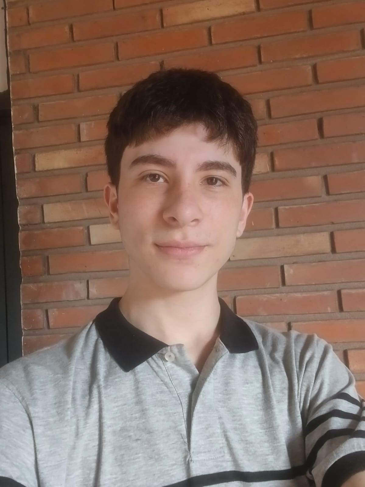
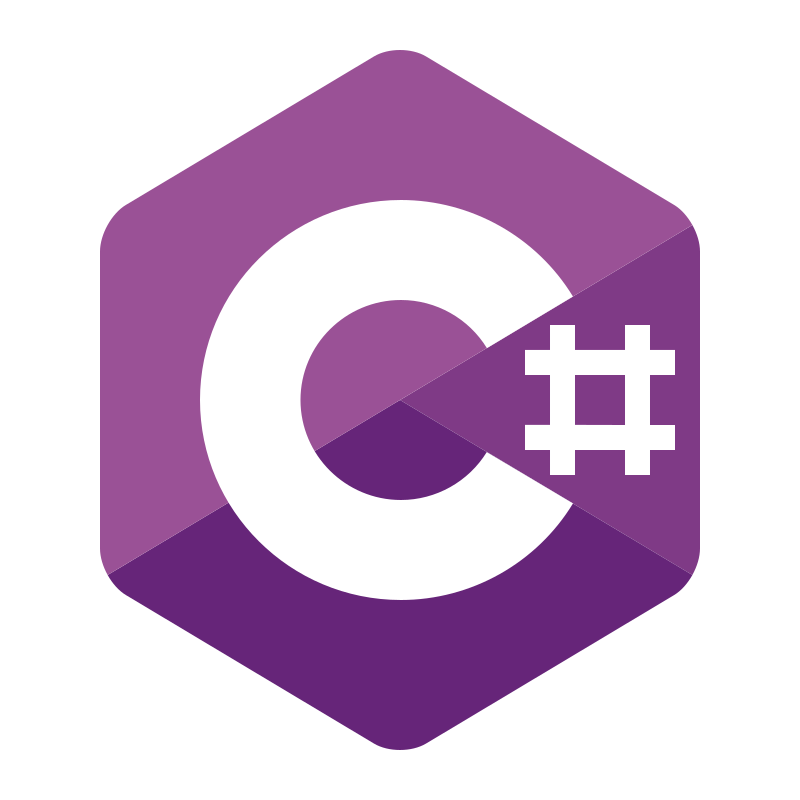
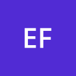

Franco Lionel Aguirre
Desarrollador Web ASP.NET Core & Blazor | Desarrollador de Videojuegos
Desarrollador de software especializado en el ecosistema .NET (C#). Construyo aplicaciones web con Blazor y ASP.NET Core, APIs con Entity Framework y SQL Server, y videojuegos con Unity. Perfil proactivo y autodidacta, orientado a resolver problemas con código limpio y optimizado.
Stack
Blazor
 .NET
.NET
 Unity
Unity
 Blender
Blender
 Git
Git

C#
Entity Framework SQL Server«Kiwi», la mascota del portfolio.